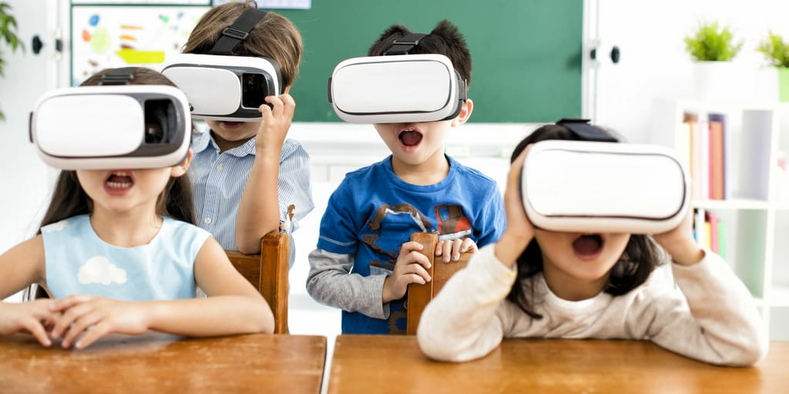

COLUMBUS INTERNATIONAL SCHOOL
1. HOW WOULD FUTURE SCHOOLS LOOK LIKE?
The Future Schools would be much more welcoming and spacious for students. The classrooms will become more flexible to correspond to the individual needs of students and the needs of classroom activities. The class will consist of many digital devices like smartboards, digital textbooks, projectors, and tablets. It will provide a fun and interactive learning experience for students. Libraries will include technologies through which students can find any book with just a touch and save a lot of time rather than searching for them in the rows of bookshelves. Cafeterias in future schools would also change. Students will use technology to order food rather than standing in line. Unhealthy food in the cafeteria will be replaced with highly nutritious food as it will help students to maintain a healthy brain which would help boost their focus.
2. STUDENTS
The students of the future will no longer have to depend only on schools to gain knowledge, they will be able to gain a vast amount of knowledge easily through the help of technology, it will help almost all the students around the globe to gain a higher level of education. They will be passionate about achieving their goals, dreams, and with the help of future technology, they will be able to bring their imagination to reality. Some of them will also have unique ideas to help others who are in need.
3. WAY OF TEACHING
Today, in classrooms and lecture halls around the world, most students still sit facing the front and listening to the teacher deliver the content that the students are expected to memorize. The teaching in the future will be more practical-based rather than theory-based as it's easier for the students to understand a particular subject. Students will be given group or individual tasks and projects which will improve their working capabilities.
WHY WOULD WE GO TO SCHOOL IN THE FUTURE?
Today the purpose of almost every school is to teach students how to work for money. The students are not taught the basic skills that would help them to be successful in life. So does it mean that to be successful in life you don't have to go to school? The answer is "NO." It is necessary to gain knowledge as it helps us to sharpen our skills like reasoning and problem-solving. But the main problem here is that in present-day schools students are not taught how to be financially stable. In future schools, students should not only learn common subjects like science, maths, languages, etc. but also other life skill subjects for example:
- Money management
- Time management
- Taxes
- Self-awareness
- Physical and mental health
- Entrepreneurship